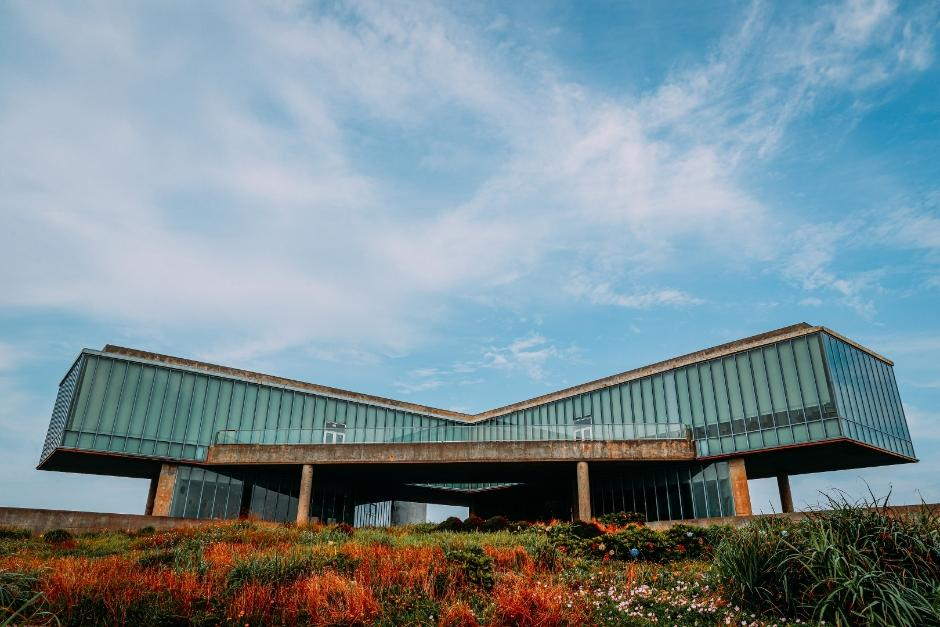
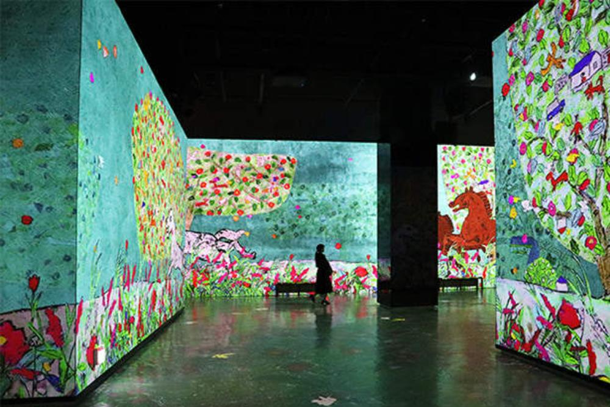

ENTJ 추천 여행지
제주도 구좌·성산


추천 이유
ENTJ는 새로운 목표를 세우고 특별한 경험을 즐기는 성향입니다. 제주 구좌·성산 지역은 아름다운 자연경관뿐 아니라 미술관, 미디어 전시, 테마 공간 등 다양한 콘텐츠를 경험할 수 있어 ENTJ의 도전 정신과 탐험 욕구를 만족시켜 주는 여행지입니다.
추천 여행 코스
- 스누피가든
- 빛의 벙커
- 유민미술관
- 성산일출봉
추천 포인트
- 제주의 자연과 문화예술을 함께 경험 가능
- 다양한 전시와 테마 공간 방문
- 성산일출봉에서 특별한 풍경 감상
- 프리미엄 여행을 즐기기 좋은 코스